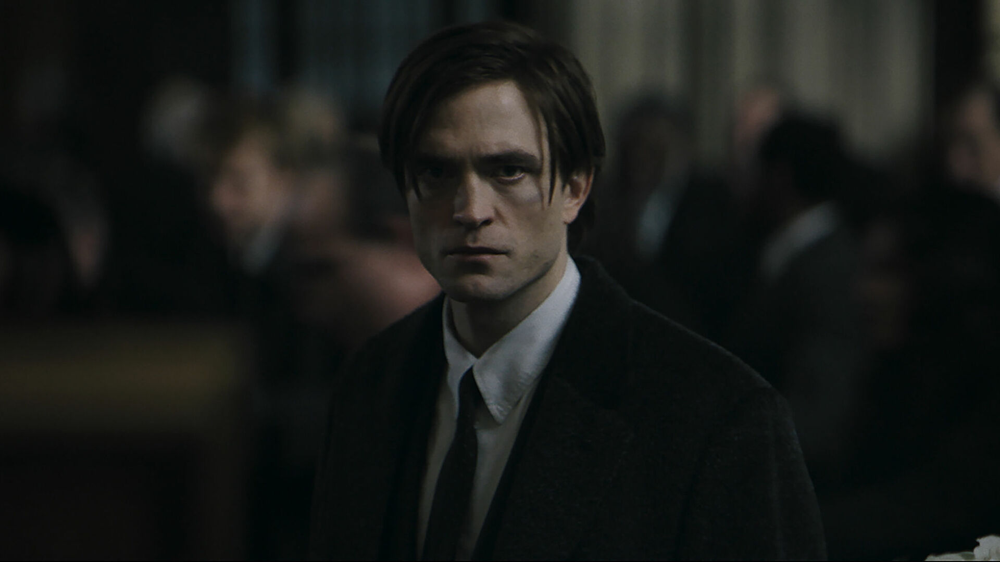
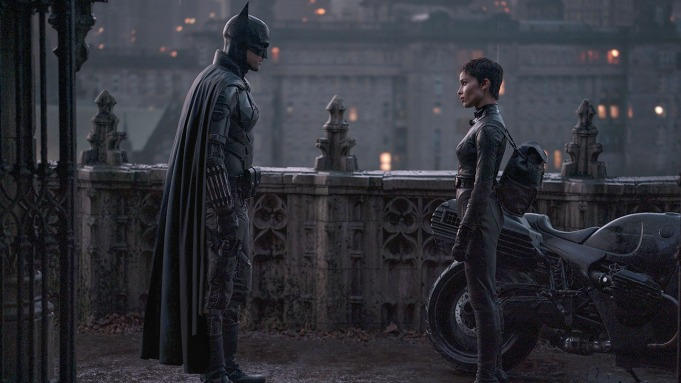

Ben Affleck’i başarılı buluyordum, oynadığı filmler de her zaman planı olan durdurulamaz güç makinesiydi. Robert Pattinson ise otuzlu yaşlarında ve kariyerinde yolun çok başında. Kanunsuz hayatını tam anlamıyla yadırgayamayan, tamamen intikam peşinde asi biri. Film yapımcıları da karakteri oluştururken Kurt Cobain’den etkilendiğini söylemişlerdi ki bu çok doğru. Yalnızca Batman olarak değil Bruce Wayne olarak da geçmişiyle yüzleşmek zorunda. Gençliğin verdiği enerji ile gaddara dönüşmeden kendine hakim olmak zorunda ve bunun yaşattığı stresin altından kalkması oldukça güç. Pattinson’un bu rolün altından kalktığını rahatlıkla söyleyebilirim, hatta belki de en iyi Batman olabilir.
Gotham’ın karanlık atmosferi ise tam anlamıyla muazzam. Filmi izlerken bile her an tenha bir yerde bıçaklanacakmış gibi tedirginliğe sebep oluyor. Yozlaşmış belediyenin beslediği suç dünyası ile resmen kaçmak için canınızı feda edeceğiniz bir yer. Sinematografinin muhteşemliği Gotham’ın çirkinliğini en güzel şekilde dışa vurmuş durumda. Zaman zaman öyle sahneler var ki, ekran görüntüsü alınıp arka plan yapmalık. Wayne’in sağ kolu Alfred’in DCEU’daki aktörüne alışsam da Andy Serkis, iyi bir seçim olmuş. Ailesini çocukken kaybeden Bruce’ın kendinden başka dünyada tek güvendiği kişi olarak içten içe bir baba figürü olarak da görüyor olabilir. Bruce ona güveniyor çünkü ondan başka kimsesi yok. Siyahi bir James Gordon olması SJW akımının getirdiği bir kötülük olmamış Jeffrey Wright, Gotham City Polis Departma’nın yozlaşmamış bir üyesi ve Batman’in sadık dostu olarak doğru seçim olmuş.
Catwoman’ı canlandıran Zoë Kravit ise bize daha çok Selina Kyle kimliğini gösteriyor. Femme fatale bir karakteri başarılı yansıtmış. Normalde süper kahraman filmlerindeki kadın karakterlerde her zaman eksik ve rahatsız edici bir şey olur ancak Catwoman’da buna rastlamadım. Ekstra olarak iyi diyemem ama yine de ortalamanın üzerinde performansla tatmin etmeyi başardı.

Villainler, Batman filmlerinde her zaman başarılı olmuştur. Bu filmde de aynı şekilde devam ediyor. Gotham’ın yolsuzluğuyla meşhur beşli çetesi şehri ele geçirmiş. Paul Dano’nun canlandırdığı akıl hastası Riddler’ın bilmece dolu macerası hoş olsa da Joker alternatifi olarak sunulup, ondan pek uzaklaşılamamış gibi geldi. Her rebootta tekrar Joker sunmayalım denerek yapılmış fakat Joker’in sıkıcı versiyonu diyebiliriz yine de kesinlikle çok başarılı. Carmine Falcon (John Turturro) ve onun yancısı Penguin (Colin Farell) ise tam isabet seçim olmuş.